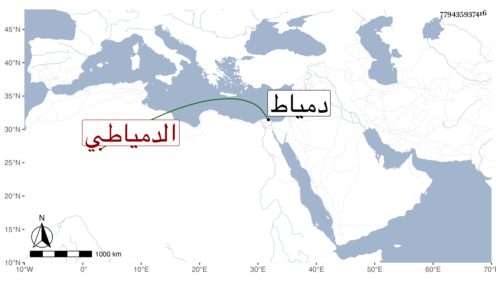

0902Sakhawi.DawLamic.ITO20230111-ara1.EIS1600.779435937416
Biography ID: 779435937416
92
عبد الله بن عبد السلام بن موسى بن عبد الله الجمال بن الزين الدمياطي الماضي أبوه وعمه عبد الرحمن والآتي أخوه النور علي والولوي محمد ويعرف بابن عبد السلام . ولد تقريبا سنة أربع وسبعين وثمانمائة تقريبا بدمياط وحفظ القرآن وعمدة السالك لابن النقيب وقطعا من ألفية ابن مالك وجمع الجوامع وقرأ على الشهاب البيجوري وتلميذه النور الأشموني وفهم ، ويذكر بخير وفضل .
